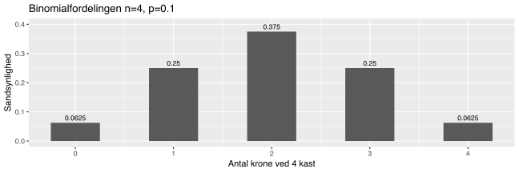
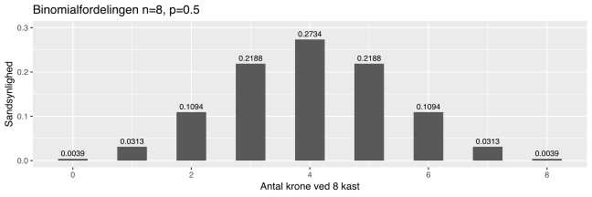
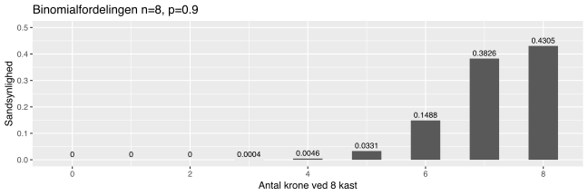
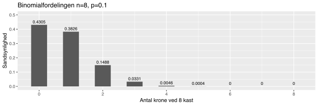
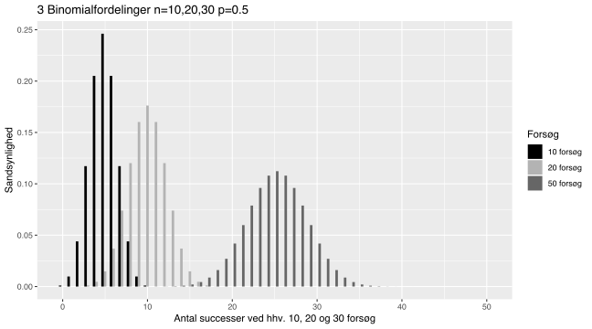
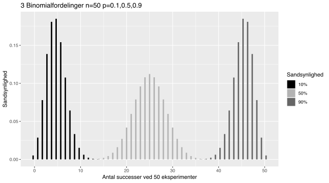

Kapitel 4 Binomialfordelingen
Et Bernoulli forsøg er et forsøg med kun 2 mulige udfald succes og fiasko. Det kan fx. være at få krone i et kast (forsøget) med en krone. Vi siger at sandsynligheden for succes er p (altså 0.5 hvis mønten er fair), sandsynligheden for fiasko kan beregnes som 1-p=1-0.5=0.5.
 En statistik studerende havde voldsomme tømmermænd og skulle op til afsluttende eksamen. Dette var en sand/falsk test, så han besluttede at slå plat og krone om spørgsmålene. Den tilsynsførende ved eksamen, så den studerende slå plat og krone skrive et svar, slå plat og krone og skrive et svar konstant i 2 timer. Da eksamen var ved at være forbi, var kun den studerende med mønten tilbage.
En statistik studerende havde voldsomme tømmermænd og skulle op til afsluttende eksamen. Dette var en sand/falsk test, så han besluttede at slå plat og krone om spørgsmålene. Den tilsynsførende ved eksamen, så den studerende slå plat og krone skrive et svar, slå plat og krone og skrive et svar konstant i 2 timer. Da eksamen var ved at være forbi, var kun den studerende med mønten tilbage.
Den tilsynsførende spørger ham nysgerrigt. “Nu har du siddet i 2 timer og slået plat og krone for svarene uden at åbne bogen, hvordan kan det dog tage dig så lang tid?”
Den studerende svarer febrisk, mens han stadig slår plat og krone “Shhh! jeg er ved at tjekke svarene”
Binomialfordelingen er en diskret (heltallig) fordeling, der beskriver sandsynligheden for x succeser, ved n identiske Bernoulli forsøg. Sandsynlighedsfordelingen for krone ved ti kast, med en fair mønt, er således 10 uafhængige forsøg med samme sandsynlighedsparameter p = 0.5 antalsparameteren n er 10, hvilket er det samlede antal enkelt forsøg. For at en stokastisk variabel X er binomialfordelt, skal følgende 3 forudsætninger være opfyldt:
Den stokastiske variabel betegner antallet af succeser i n forsøg, som hver især kan antage to værdier kaldet succes og fiasko.
De n forsøg er uafhængige, har man fx. 4 succeser er successandsynligheden ikke ændret i næste forsøg.
Sandsynlighedsparameteren er konstant p for samtlige forsøg, dvs. successandsynligheden ændrer sig ikke.
Vi siger den stokastiske variabel er binomialfordelt, med antalsparameter n og sandsynlighedsparameter p, notationen for dette er:
\[X\sim b(n,p)\]
Vi kan for \(X\sim b(n,p)\) beregne punktsandsynligheder ved formlen:
\[P(X=x)=\binom{n}{x} p^{x} (1-p)^{n-x}\]
Hvor \(\binom{n}{x}\) er binomialkoefficienten denne kan udregnes som:
\[\binom{n}{x}=\frac{n!}{x!(n-x)!}=\frac{n \cdot (n-1)\cdot...\cdot 1 }{x\cdot...\cdot1((n-x)\cdot...\cdot1}\]
Punktsandsynligheden for i 4 kast at få netop fx. 1 krone. kan udregnes som antal mulige udfald hvor man netop har 1 krone gange sandsynligheden for netop at få en krone.
De mulige udfald hvor antallet af succeser dvs. krone er en, bliver:
- {krone, plat, plat, plat}
- {plat, krone, plat, plat}
- {plat, plat, krone, plat}
- {plat, plat, plat, krone}
Vi kan netop udregne dette antal mulige udfald ved binomialkoefficienten som: \[\binom{4}{1}=\frac{4\cdot3\cdot2\cdot1}{1\cdot3\cdot2\cdot1}=\frac{24}{6}=4\]
Sandsynligheden for kun et udfald med en krone udregnes til: \[p^{x} (1-p)^{n-x}=0.5^{1} (1-0.5)^{4-1}=0.5\cdot0.125=0.0625\]
Vi får beregner altså punktsandsynligheden til:
\[P(X=1)=4*0.0625=0.25\]
Nedenfor er sandsynlighedsfordelingen for binomialfordelingen med antalsparameter 4 og sandsynlighedsparameter 0.5 illustreret, bemærk punktsandsynligheden for 1 krone er netop 0.25:

Her ses binomialfordelingen med antalsparamerter n=8 og sandsynlighedsparameter p=0.5.

Her ses binomialfordelingen med antalsparamerter n=8 og sandsynlighedsparameter p=0.9. Bemærk fordelingen bliver venstreskæv hvis p er større end 0.5 hvor den er symmetrisk.

Her ses binomialfordelingen med antalsparamerter n=8 og sandsynlighedsparameter p=0.1 denne er højreskæv.

Figuren nedenfor vises 3 binomialfordelinger, samtlige med sandsynlighedsparameter p=0.5 og antalsparameter n hhv. 10, 20 og 50.

Figuren nedenfor viser 3 binomialfordelinger med sandsynlighedsparametre p hhv. 0.1, 0.5 og 0.9 samtlige har antalsparameter n 50. Bemærk at sandsynlighedsparametrene påvirker skævheden. En sandsynlighedsparameter, mindre end 0.5 giver højreskævhed, netop 0.5 giver symmetri og større end 0.5 venstreskævhed.

Vi kan for for en binomialfordelt stokastisk variabel \(X\sim bin(n,p)\) beregne:
Middelværdien \[E(X)=n\cdot p\] Standardafvigelsen til \[SD(X)=\sqrt[]{n\cdot p \cdot (1-p)}\]